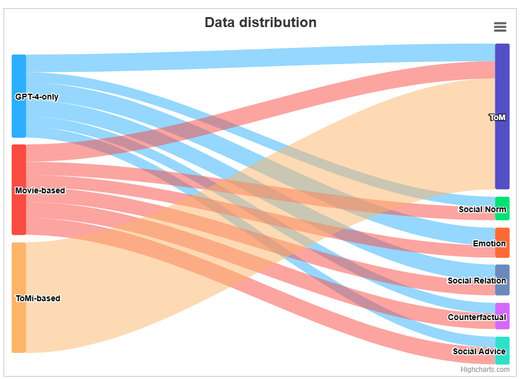

想象一下：你正在参加一个充满活力的鸡尾酒会🍹，充满了谈话的嗡嗡声和酒杯的碰撞声🍻 .你是一个悠闲的观察者👀，舒适地坐落在一个角落里。 然而，你仍然可以通过解读人们的语言和非语言暗示，轻松地找出不同人之间的社交关系，了解发生了什么，甚至提供社交建议。
如果大型语言模型（LLM）能够复制这种社交能力，那么我们就可以说它具备了一定的社交能力。 想知道不同的 LLM 在理解和驾驭社交互动方面的表现如何吗？ 看看这些由人工智能模型处理的演示
“我今天哭了 4 次”
<figure view-type="Preview"><source name="demo1.mp4" mime="video/mp4" origin-height="1462.000000" origin-width="3724.000000" size="32278627" token="ZFygbvrhhoFDozxzGAJcDuKqnsd"/></figure>
KokoMind：社交互动的多方面评估数据集
KokoMind 包含 150 个复杂的多方社交互动（每个来源 50 个）以及自由文本问题和答案。 为确保多样性和可扩展性，避免数据污染，所有社交互动、问题和答案均由 GPT-4 生成，随后由人类专家进行验证。 这些生成基于三个不同的来源：
🤖 GPT-4-only: 此子集仅由 GPT-4 通过提示创建，不基于现有来源。
🎦 基于电影：为避免数据污染，这部分数据基于从 2022 年之后上映的电影中提取的各种场景。GPT-4 塑造了这些情况，在保持核心本质的同时添加了自己的元素。
🧠 基于 ToMi：此段包含由模拟数据集 ToMi 支持的数据，该数据集涉及将物理对象移动到不同位置，这是心智理论的经典测试。这些社交互动再次被 GPT-4 美化和扩展。
对于每一次社交互动，我们都会提出各种问题，旨在探讨社会理解的以下方面：
🧠 心智理论：评估对他人心理状态和观点的理解的问题。
👍 社会规范：旨在辨别情境中的社会价值观和规范的问题。
😃 情绪识别：旨在识别和理解上下文中的情绪元素的问题。
👨👩👧 社会关系： 以人际动态和关系为重点的查询。
🤔 反事实问题：旨在探索替代结果或可能性的假设查询。
📝 社交建议：引发与给定情况相关的建议或行动建议的问题。
以下是数据分布：

结果：GPT-4 位居榜首，在许多情况下紧随其后的是 Claude
我们以text-davinci-003为参考，按照 AlpacaEval 评估了不同的模型，并进行了一项消减研究，即从上下文中删除括号中的非语言线索（如紧张地喝咖啡等）。 以下是一些有趣的启示。
- 在两位LLM基于评估者的中，与 Claude 相比，GPT-4 在识别获胜模型方面表现出更大的确定性和信心。
- 当情境中没有非语言线索，互动要么完全由 GPT-4 生成，要么以电影为基础时，克劳德的表现优于 GPT-4（两位评估者都同意这一点）；而当情境中包含非语言线索时，GPT-4 的表现总是优于克劳德。 一种可能的解释是，GPT-4 是一种多模态模型，因此正如预期的那样，它能更好地理解额外的非语言信息。 还要注意的是，当出现非语言线索时，基于 LLM 的评估者会认为表现最好的模型比表现较差的模型更有优势。
- 也许有人会问，如果社会互动是由 GPT-4 生成的，这是否意味着 GPT-4 已经可以回答这些问题？ 与问题的类型相比，来源所起的作用似乎要小一些。
- 在与心智理论无关的任务中，尤其是从 ToMi 数据集生成的样本中，基于 LLM 的评估者似乎更容易确定优越的模型。 这可能是由于即使是 LLM 评估者也很难在心智理论情境中找出正确答案。
- Claude 擅长在许多情况下提供社交建议。
局限性
该项目虽然在很多方面都令人振奋，但也存在一定的局限性。 首先，KokoMind 的规模相对较小，这可能会限制该结论的广泛适用性和全面性。 其次，KokoMind 中的所有交互都是由 GPT-4 生成的，需要人工验证，因此很难扩大数据集的规模。 此外，虽然 KokoMind 在数据集中提供了人类验证过的答案，但在评估过程中并没有将这些答案作为参考，由于这些答案是由 GPT-4 生成的，因此可能会偏向于 GPT-4，未来的研究重点可以放在如何用人类验证过的机器生成的参考答案来评估模型上。 其次，评估的所有模型都是 2023 年 6 月 1 日之前的版本。 新发布的模型可能具有更好的性能。 尽管存在这些局限性，该团队仍设想将 KokoMind 作为跳板，用于未来与社交智能、多模态语言模型等相关的研究。
参考资料：https://chats-lab.github.io/KokoMind/